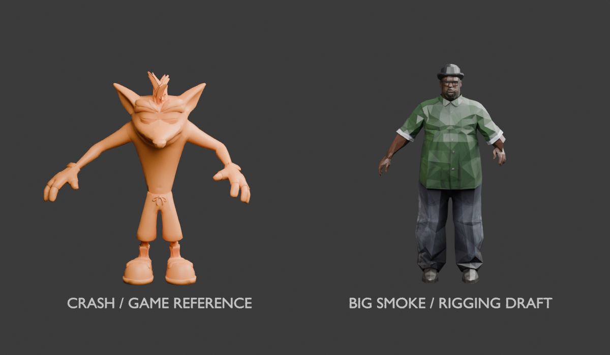
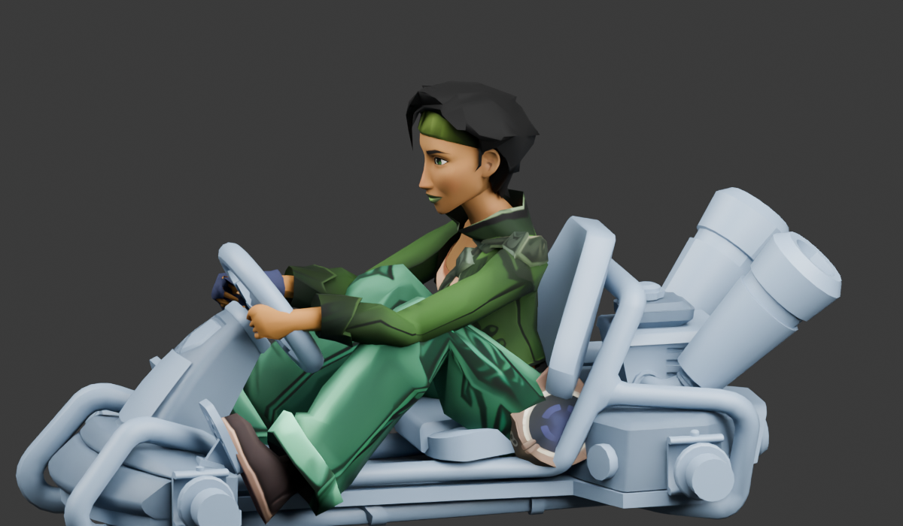

01 — Read this first: scope and prerequisites
This handbook documents the CTR Nitro-Fueled PC asset-creation work by venvs and collaborators, checked against the local source on 19 October 2026. Its focus is custom characters, skins, native skeletons, animation retargeting, Blender preparation, textures, portraits, voices, tracks, collision, gameplay data and Nitro Editor.
The multiplayer chapter explains the synchronization principles and observed failure modes. The launcher product, its interface, implementation, package formats, distribution and release process are intentionally excluded. This is a creator guide, not a guide to reproducing that product.
Our demonstrated target is a compatible Windows PC-port runtime and merged CUSA13795 update 01.21 game data. Other regions, asset versions and executables need separate validation. Obtain your own compatible game data and permitted source art, plus the matching creator tools/source distribution.
Some historical recipes consume prepared mesh JSON, extracted native donors and named Blender scenes. This documentation bundle contains no game data or meshes. Its source index identifies the implementation files by path and hash; obtain those source files separately. It is not a generic one-command converter from any downloaded model to a finished character or course.
Examples use PowerShell from the project root unless otherwise stated. Replace placeholders and inspect historical scripts for absolute paths and expected object names before running them. Keep source assets unchanged, use fresh output directories and preserve a working baseline.
Read the Blender chapters before the character/skin chapters. Track creators should read the native asset chapter, then track import, collision/race systems and editor workflows. Experimental results are identified throughout: a parsed file, a Blender preview and a successful native race are different levels of evidence.
Back to contents
02 — What has actually been demonstrated
| Area | Demonstrated | Limits |
|---|
| Big Smoke / Jade | Native custom driver assets and additive character registration; Blender fitting and native import recipes. | Donor compatibility is specific; exact custom voice triggers remain partly experimental. |
| Twinsanity Crash | Additional outfit on Crash, separate portrait and native appearance resources. | Not a new driver skeleton or a universal skin converter. |
| Private multiplayer | Missing mod download, both countdowns held, remote appearance, Retro Sewer race completion and return to lobby reported in the controlled test. | Does not establish arbitrary public matchmaking, every cosmetic category or universal hot reload. |
| Retro Sewer Speedway | Separate selectable course and completed private cross-PC race. | Not a certification of every mode/content path. |
| Bowser’s Castle | Imported scenery, own source collision, start positioning and whole-track driving. | AI, hazards and complete race behavior remain experimental in parts. |
| Neon Paradise | Original extracted track visible and full road contact reported after collision fixes. | Lap counting and sky still unresolved; no-sun-shafts test not yet confirmed. |
| Nitro Editor roads | Drafting and native scene/collision exports pass documented automated checks. | Not a finished arbitrary-course creator with fully proven race logic. |
Do not use an old filename or report’s “passed” field as proof of gameplay. Match it to the package and actual test. An artifact called v6 can be a failed diagnostic while v4 remains the useful baseline.
Back to contents
04 — Native asset foundations: PAK, IGZ, HKX and updates
PAK is the archive container. IGZ stores native objects, references, models, materials, images and gameplay data. HKX carries Havok collision structures. LNG contains localized text. A file can parse successfully yet still refer to missing objects or serialize fields incorrectly for the active game build.
Always use the effective asset
Resolve each asset path through the base archive and relevant update archives in load precedence. Our existing-track edits initially appeared unchanged because a newer update contained the same path. The editor’s update-aware workflow applies update/update2/update3 in sequence and exports changes against the effective baseline. A custom named track PAK can also be shadowed by an entry in update3. Check the exact bytes loaded by the test session.
Reference tables that must survive edits
| Table | Role in these recipes |
|---|
| TSTR | Strings addressed by indices. |
| TDEP | Dependencies and resource paths. Preserve serialized suffix data when rewriting. |
| EXID / EXNM | External hashed/named references, including namespace identity. |
| ROOT / ONAM | Root objects and named object registration; names also carry cached hashes. |
| ROFS / RSTT / RHND / RPID | Relocations for pointers, strings, handles and memory-pool data. |
ctr_igz_edit.Edit provides pointer-aware reads/writes, cloning, string insertion and fixup serialization. Its hash helper normalizes slash direction and case before FNV hashing. Use those helpers and the existing recipes instead of a global binary search-and-replace.
List edits require consistent count, capacity, byte size, pointer and ownership flags. In the layouts used here, writing an eight-byte size at a location that contains a four-byte size followed by flags destroys the flags. A file may survive load and then crash during cleanup. Clone a compatible native list or preserve every relevant field and relocation.
ctr_pak.write_override writes entries using supplied metadata. Its basic contract is an override writer, not an automatic new-asset registration system. The character recipes deliberately create replacement Entry metadata and recompute hashes for new paths. Validate extraction of every output payload, not just ZIP CRCs.
Minimum build receipts
Record the donor path/hash, effective update source, runtime/game revision, converter version, new identities, input geometry/texture hashes, output payload hashes and validation results. Separate gameTested:false from static checks. Never overwrite the only working build.
How a PAK becomes recognizable game content
A PAK is an archive, not an automatic registration instruction. The working chain is: mounted archive → indexed internal resource path → generated package and dependencies → native objects and references → character/skin/track registration → menu selection → runtime asset loading.
Replacement: retain the resource identity expected by an existing game object and provide compatible replacement data through the effective archive search order. Addition: create distinct resource identities and update the relevant registries and menu data so the game can select and request them. Merely placing a new PAK beside the originals does not create a menu slot.
Our additive builds combine registration changes in update3.pak, including changes to systemData, character listings or map lists as appropriate. The character and track chapters explain the corresponding native object links. Independently built registration archives must be merged at the data level; replacing one with another can remove previously registered content.
Verify both the outer archive index and the internal IGZ references. Generated package manifests, dependency paths, external handles, object names and resource IDs must resolve to the intended assets. A visible menu label proves registration only; invisible geometry can still indicate a missing package, incompatible model or unresolved dependency.
Hash distinction: archive-path hashing and entity-name hashing are not interchangeable. The native TTR entity-name repair helper preserves name case, while archive-path helpers normalize paths. Use the matching helper for the field being edited; do not lowercase every identifier.
Back to contents
05 — Blender foundations: native rig, bind pose and working scene
Our Blender work used native driver reference meshes and decoded native skeleton/animation data. It did not rely on exporting an arbitrary Rigify skeleton and expecting the game to accept it. Blender was the fitting, inspection and preparation environment; native importers produced the actual game resources.
Build the reference scene
- Extract the effective donor model and skeleton data. For Crash/Tawna, preserve bone names, parent indices, reference transforms, inverse-bind information and each bone’s native blend index.
- Use the reference helpers to construct the native armature and skinned donor mesh. Relevant files include
crash-reference/Crash-rigged-reference.json, tawna-reference/Tawna-rigged-reference.json, tawna-reference/build_reference.py and the native model-reference helpers. - Decode representative native driving poses with
decode_driving_pose.py or decode_tawna_pose.py. The donor’s upright rest pose is not the final seated driving pose. - Add the native kart reference and its actual animated fit/contact data using
add_kart_reference.py and the kart-reference scripts. Static wheel/pedal placement can differ from the runtime pose. - Keep the reference driver and original armature unchanged in a separate collection. Duplicate only what is needed for a fitting experiment. Use front, side and rear views, with contact close-ups.
Coordinate spaces
A vertex can be in source-model space, Blender object space, armature space, bind space, posed space or native game space. Record each conversion. The Smoke exporter converts Blender position to native with (-y*100, x*100, z*100), while its direction/normal conversion is (-y,x,z). Jade’s native animation reconstruction additionally handles the donor animation unit conversion involving 0.0254. Those exact recipes apply to their intermediates; do not apply their factors again to data already converted.
Do not casually apply transforms to an armature after fitting without updating the corresponding bind data. If you bake object transforms into mesh coordinates, keep the armature/mesh relationship explicit. Negative determinants require winding review. Preserve non-destructive source copies before triangulation, seam splitting or inverse-skin baking.
How to run a Blender recipe
Scripts importing bpy must run in Blender, not the bundled ordinary Python. Several expect an already prepared .blend with exact object names. Their hard-coded output directories may overwrite a research stage; adapt a copy before running.
# Example invocation pattern; substitute your executable, scene and script:
& "C:\Path\To\blender.exe" -b "C:\Creator\approved-reference.blend" --python "C:\Creator\adapted-fit-export.py"
# The Neon workspace script accepts arguments after --:
& "C:\Path\To\blender.exe" -b --python "CTR-Track-Editor\tools\blender_neon_workspace.py" -- "C:\Creator\extracted-neon" "C:\Creator\new-blender-output"
Open the resulting .blend interactively and inspect it. A background script exit code alone cannot establish that elbows, grip, eyelids or feet look correct.
Back to contents
06 — Blender walkthrough: Big Smoke weights and inverse skinning
From source mesh to anatomical fit
The experiments progressed through transferred weights, fitted anatomy, polished proportions and kart-contact revisions. Files such as Crash-Big-Smoke-fitted-rig.blend and Big-Smoke-contact-revision-02.blend preserve different stages; a draft custom bind rig is not the same as the final exported native bind skeleton.
- Import the source surface and preserve UVs/materials. Build the Crash comparison scene with
build_comparison.py. - Inspect connected components. The hat should remain rigidly attached to the head; disconnected hands/fingertips must not fall into pelvis weighting merely because a nearest-surface transfer picked the wrong region.
fit_smoke_rig.py fits a draft armature to anatomical anchors, retaining meaningful native bone names. It rotates arm/leg segments toward new targets and aligns roll, rather than only translating joints.- Assign region-based weights: head/hat, torso transitions, shoulder/upper arm/forearm/hand, pelvis/thigh/calf/foot. Smooth transitions along each limb; use complete component classifications where they protect garment seams.
- Inspect with
check_rig.py, check_hat.py and pose renders. The early report explicitly says rigid hands/finger articulation remain limited. Do not present the draft as full finger rigging. - Use
resize_smoke_proportions.py, fit_kart_contacts.py, contact inspection and render scripts to refine the seated silhouette, wheel reach, pedals and clipping. Save revisions.
Why we baked back to the original native bind
Changing joint positions in a Blender fitting rig does not automatically change the native skeleton and animation system. The successful export approach takes the approved posed surface and solves for vertices that produce that surface when skinned by the original native donor skeleton.
For a vertex with normalized weights wᵢ, each bone deformation is Dᵢ = posedBoneᵢ × inverse(bindBoneᵢ). Linear skinning uses M = Σ(wᵢDᵢ). Given the desired posed vertex p, export v = inverse(M)p. This is inverse linear skinning, not replacing the game’s skeleton with the fitting skeleton.
Exact exporter safeguards
- Map the fitting groups to real native bone names and blend indices. Reject missing or non-exportable bones.
- Keep at most eight influences and normalize. Quantize to integer weights summing to 255 before solving inverse skinning, so the roundtrip tests the actual packed weights.
- Construct the blended deformation matrix; reject near-singular transforms instead of exporting exploding vertices.
- Remove the reference scene’s deliberate placement offset before calculating the native bind vertex.
- Reapply the same packed deformation and measure the difference from the target pose. The Smoke exporter rejects roundtrip error greater than 1e-5 in its working units.
- Split vertices where the exporter needs separate UV coordinates. Recompute normals on the actual exported bind geometry and share intended smooth normals across UV duplicates.
- Convert positions/normals to native axes and write
position, normal, uv, skin and triangle indices to the game-bind JSON.
export_smoke_game_bind.py writes the original approved-fit JSON; export_smoke_large_game_bind.py handles the later size revision. Feed the matching output into the native model importer. Do not mix an older geometry JSON with a newer fit/weight report.
A tiny idle roundtrip error proves that pose reconstruction, not every animation. Test steering, boost, jump, hit, rescue and podium motions separately. A rigid hand can look correct at rest while clipping during an animation.

Reference-stage rigging comparison; this is an authoring image, not a final in-game result.Back to contents
07 — Blender walkthrough: Jade fitting, grip IK and native animation banks
Preserve source skin information
Jade’s source contains named joints and weighted meshes. inspect_source.py, normalize_uv.py and prepare_atlas.py prepare source JSON and texture layout. fit_export.py maps source anatomical regions into the Tawna-compatible native rig rather than discarding all source weights and using blind automatic weights.
- Load the Tawna reference skeleton and decoded idle clip.
- Choose a seated pelvis/torso fit. The saved recipe uses body scale 0.91 and a 12-degree body rotation; these are project values, not universal presets.
- Use the actual kart contact data to position hands on the rim and feet on the pedals. Fit upper/lower limb segments between anatomical anchors.
- Orient each palm using wrist-to-finger direction and across-palm direction so roll is controlled. Translation alone cannot correct a twisted grip.
- Blend forearm twist continuously toward the hand orientation to avoid a sharp cuff/sleeve discontinuity.
- Fit finger geometry to the chosen grip. The current exported mapping consolidates finger influences onto the hand; do not claim independent articulated native finger weights merely because finger source geometry was fitted individually.
- Fit foot orientation/scale to the pedal; check soles and toes in side views rather than only foot-joint positions.
- Generate the target native local transforms and
retarget-base.json, then inverse-skin the fitted geometry into the compatible bind representation.
Motion retargeting
retarget_motion.py measures each clip’s motion relative to the donor base frame and applies a bounded rotation/translation delta around the approved target pose. It deliberately reduces driving torso/head/leg movement, with different amounts for podium clips. For example, ordinary driving spine/pelvis motion is damped more strongly than general limb motion. These are authored fit controls, not automatic universally correct retargeting.
Quaternion conversion matters: the stored arrays use x,y,z,w while Blender’s Quaternion constructor uses w,x,y,z. Preserve multiplication order and parent-local transforms. Reconstruct global matrices along the parent chain before solving contacts, then convert corrected globals back to local tracks.
Two-bone grip stabilization
stabilize_driving_grip solves shoulder–elbow–hand positions for each driving frame against the approved hand targets. It retains segment lengths, clamps unreachable distance and uses the original elbow bend direction to choose the elbow solution. It writes corrected local transforms for the arm chain. Podium, additive and partial clips are excluded from this particular grip operation.
Write the native bank
build_animation_bank.py decodes the donor animation bank using the matching Havok spline codec helper.- Retarget eligible full-body clips, preserving the existing events/container structure. Additive/partial or unsupported-small-track clips are kept unchanged under its explicit conditions.
- Retain required bones and ancestors; unused tracks are stabilized to target transforms as defined in the recipe.
- Recompress clips, check storage capacity and decode the new payload again. The saved check limits translation/scale roundtrip error to 0.002; that number is not a complete angular-error or visual-quality test.
- Rebuild relocation tables while retaining original object offsets and write
DriverJadex.hka. - Point the independent character behavior/package resources to the new animation identity, leaving the original donor’s bank intact.
preview_retarget.py, check_animations.py, render_side_review.py and the saved front/side/back contact renders are the review tools. Inspect idle variants, boost and jump in Blender, then in game. The bank preserving events means donor dispatch is retained; it does not prove that a desired new voice or gesture trigger has been implemented.

Blender side-view review of the seated pose and kart contacts; not a native game screenshot.Back to contents
08 — Blender walkthrough: Twinsanity, atlases, alpha and final export
Twinsanity fit
twinsanity/fit_export.py imports the source OBJ using explicit forward/up axes, bakes the source object transform into its mesh and keeps the comparison placement separate. It fits the original character surface to Crash’s native driving contacts and inverse-skins it into Crash’s bind skeleton. The saved body scale is 0.78 for that source, not a conversion constant for every Crash model.
Alpha geometry
The chosen native donor material is opaque. Full rectangular eyelid planes would therefore hide the eyes. This recipe samples the original eyelid alpha mask, clips the relevant UV polygons to opaque spans and rebuilds just those mesh portions. That was a specific workaround for a known opaque donor—not a general recommendation to discard transparency from every character.
Jade’s first opaque-material test omits the small eyelash planes and records that limitation. A final asset using transparency should instead select and validate an appropriate native cutout/blend material. Blender material transparency alone is not exported automatically into the native shader.
Atlas construction
- Inventory source textures and material UV domains, including coordinates outside 0–1.
- Build the atlas and write each source rectangle to a layout JSON. Jade’s recipe uses a 2048² atlas with padded tile interiors; Twinsanity’s is 1024².
- Extrude edge pixels into padding to reduce mip/filter bleed.
- Normalize each material’s original UV domain before mapping it to its atlas rectangle. Preserve intentional tiling or explicitly bake it; simply clamping all coordinates can destroy the design.
- Apply the vertical convention consistently. The recipes explicitly convert atlas pixel placement to UV orientation.
- Handle special eye/iris alignment separately where needed; do not let generated art move the gaze unintentionally.
- Preview using the packed atlas, then encode the native image and decode it back for inspection.
Normals, seams and winding
Triangulate the exported result and validate all index ranges. UV discontinuities may require duplicate native vertices. Recompute normals on the final bind geometry, keeping intended smoothing across UV seams and hard edges where required. An axis conversion with reversed orientation needs corresponding winding treatment; black/missing faces should not be “fixed” by turning on arbitrary double-sided rendering without checking the transform.
Practical review loop
Keep separate source, fitted, contact-approved and native-export .blend stages. Pack preview textures for portability, but also retain explicit source texture paths/hashes for the converter. Save front, rear, side and hand/pedal close-ups. Check hat/ears/hair, skirt or jacket seams, elbow/knee bends, seat penetration, wheel rim grip and soles on pedals. Run the native import/readback and then inspect the game; Blender previews use Blender shading and cannot certify native lighting/material behavior.
Portrait scripts render or encode separate image resources; they do not emerge automatically from rig export. The registration chapters explain how those images are linked to the new skin/driver records.
Back to contents
09 — Blender track preparation, source colors and collision authoring
blender_neon_workspace.py reconstructs the extracted source OBJ, UVs and per-vertex RGB in Blender. It rotates source Y-up to Blender Z-up with (x,-z,y), creates a point-domain color attribute, converts source color values to linear space and multiplies the source texture by those vertex colors for an emission preview. Closest filtering preserves the PS1 reference appearance.
That preview is not the native game’s lighting. The workspace labels itself visual-only and preserves provenance. Source quad flags and collision roles must still be decoded before generating a physical road.
- Import the original source mesh in a fresh scene and preserve its transforms, UVs, vertex colors and material roles.
- Separate visible road, scenery, transparent effects, collision candidates, boost regions and invisible death/trigger geometry into identifiable sets.
- Keep source geometry as reference. Author simplified collision on the actual unique road, weld seams and remove decorative gaps that should not stop the kart.
- Apply one documented scale to visuals, collision and gameplay anchors together. Inspect kart-relative width, slope and turns.
- Export geometry and metadata through the project’s JSON contracts, then build native models and HKX through the editor/helpers.
- Decode native output to compare alignment and BVH coverage. A Blender collision collection is not native physics until it is encoded, bound and loaded.
- Drive slowly around the entire course and test both directions near seams; test checkpoints separately from contact.
blender_ctr_collision.py and the source-audit tools preserve the relationship to the extracted level. blender_neon_start_remaster.py was an experimental rebuilt start section. The user subsequently chose the original Neon course, so the remaster is not the accepted final geometry. Do not mix its surface or scale with the original-track collision candidate.
A request for Nitro-Fueled-style art describes an art direction. It does not mean donor road geometry can substitute for this unique track’s physical surface. Sky, light sources and native environmental effects require game-specific scene resources beyond Blender’s world settings.
Back to contents
10 — Custom character walkthrough: Big Smoke and Jade
A selectable racer is a family of linked native assets. The path is: menu driver record → skin/outfit record → actor and package identities → model/material/texture resources → skeleton, animations and gameplay behavior. The portrait and localized name are separate references.
1. Prepare a compatible donor and project
Big Smoke used the Crash family. Jade used Tawna’s model/animation family. Extract the effective donor assets and retain an untouched reference. Allocate a new identity such as DriverMyCharacter, a separate outfit namespace and independent HUD icon names. Record all names before converting anything.
2. Rig and align the mesh
In Blender, fit the new mesh to the donor bind pose and skeleton. Apply the intended coordinate conversion consistently; retain valid bone indices and weight semantics. Check seated proportions, steering-wheel reach, feet and head clearance. Export the prepared mesh to the JSON contract consumed by the matching importer. OBJ geometry alone does not contain a usable driver rig.
The verified Crash importer uses an 80-byte skinned vertex layout, fewer than 65,536 vertices per imported mesh, valid donor bone indices and at most eight influences per vertex, with packed weights summing to 255. These are limits of that importer/layout. The Tawna importer is a separate recipe; do not assume a buffer layout from one donor fits every character.
3. Import native model buffers
Use ctr_model_import.replace_mesh or ctr_model_import_tawna.replace_mesh as appropriate. Preserve skeleton and native material handles, replace geometry buffers, update vertex/index counts, draw ranges and bounds, and read back the output. Check finite coordinates, valid indices, triangle counts and weight normalization.
4. Convert texture/material assets
Prepare color, normal and auxiliary maps expected by the donor material. Preserve alpha where the asset needs it. Our examples use PS4-tiled BC1 cloth textures and BC3 portrait textures. Pixel format, dimensions, mip count, payload length and tiling must agree. A normal PNG renamed to .igz is not a native image. Bind the new texture identities into independently named material resources.
5. Build the actor and outfit packages
Build normal skins, cutscene skins and materials packages, plus the actor package containing the new driver data and required behavior resources. Retain shared resources intentionally; rename only the new character’s resources and repair TSTR/TDEP, EXID and named hashes together. Copying all resources and renaming every occurrence can accidentally split shared props or break engine references.
Jade’s recipe uses DriverJade and a separate Jadex animation/behavior identity. It sets an animation scale of 0.8 and uses prepared retargeted motions/hand IK. That is a Jade-specific fit, not a universal character scale.
6. Register a new roster entry
- Read effective
looseData/systemData.igz from the current combined registration baseline.
- Clone a donor driver, skin, outfit, material-package list and package reference.
- Set new IDs, names, outfit packages and portrait references. Use intended availability/unlock behavior. Jade copied the always-available state used by default Crash and cleared the cloned unlock reference.
- Append the driver pointer to
SystemData_availableDrivers. Keep every existing entry. Give the new driver a distinct skin list.
- Add new named objects to ROOT/ONAM and update list metadata and pointer/handle fixups.
- Append the actor identity to
characterlisting.igz.
- Add localized names in
systemData_en.lng using the cloned records’ actual identities.
7. Add independent icons
Clone the HUD material and required image resources, give them a distinct identity, and point the driver/skin record to the new icon. Prepare menu and race sizes required by the donor. Verify the result in the character menu, HUD and results screen. A new label does not automatically replace a portrait.
8. Package, validate and test
Put actor/outfit/material archives and the merged registration in a complete package. Run the matching validators, mount the completed archives in an isolated compatible game test, select the new racer and check menu rendering, race animation, results and return to menu. Select the original donor afterward to confirm it remains intact. Finally test another client with absent assets using the controlled sync flow.
Exact project references: mod-research/build_smoke_probe.py, build_smoke_v8.py, build_jade.py, validate_jade.py, validate_smoke_probe.py, and the two native model importers. The file named build_smoke_v8.py actually writes the v9 recipe. Jade reads the Twinsanity-v3 combined overlay. Do not run those historical scripts out of sequence or assume their hard-coded source/output paths are your own.
Back to contents
11 — Custom skin walkthrough: Twinsanity Crash
A skin retains the existing driver identity while adding an outfit. This keeps the driver’s gameplay identity, animations and usually voice. Choose this when the user should select Crash and then choose another appearance, rather than select a new racer.
- Allocate an outfit namespace, e.g.
DriverCrash_Outfit_Twinsanity. Prepare geometry in the compatible donor skeleton space, or retain geometry for a texture-only recolor.
- Build three outfit archives: normal skins, cutscene skins and materials. Rename outfit-specific internal paths and reference hashes; preserve shared prop/material identities.
- Clone
Skin_Crash_Default, its outfit object and material package references in the current systemData baseline.
- Set the new label/identity and point the outfit at the new package names.
- Append the new skin pointer to Crash’s existing skin list. Preserve every original and previously added skin. Register the new objects in ROOT/ONAM.
- Add the corresponding localized record, e.g.
Skin_Crash_Twinsanity, and an independent icon/material if the skin needs its own portrait.
- Merge the shared registration and test default Crash, the new skin, other Crash skins and existing custom racers.
drivercrash_outfit_twinsanity_skins.pak
drivercrash_outfit_twinsanity_cutscene_skins.pak
drivercrash_outfit_twinsanity_materials.pak
update3.pak # merged registration, not an independently stackable second copy
The reference recipes are build_twinsanity_skin.py and finish_twinsanity_v3.py. The latter includes the independent portrait work and shared-prop preservation. Recoloring the donor’s texture in place is a replacement mod; cloning and appending the outfit is what makes it an additional skin.
Back to contents
12 — Karts, wheels, stickers and other cosmetic types
The multiplayer requirement applies to all shared appearance resources, not only drivers. However, this project does not contain a demonstrated complete arbitrary new-kart/new-wheel/new-sticker authoring recipe comparable to the Big Smoke/Jade workflows. The green/blue karts visible during tests are not evidence that every customization type has been ported.
For a new cosmetic type, first inspect a native record of that exact type. Trace its selection-list entry, package identity, model/material resources, localized text, icon and network selection ID. Clone compatible records, allocate distinct identities, append rather than replace lists, repair references and merge shared registration. For wheels, preserve attachment transforms; for karts, check sockets, steering, exhaust and driver placement; for stickers, inspect the actual decal/material system instead of treating a sticker as a driver skin.
- Prove a local replacement of that cosmetic type with a reversible test.
- Prove an additive selectable slot without losing stock entries.
- Verify the selected ID survives online serialization.
- Verify another client with matching registration and assets renders it.
- Test an absent-asset recipient through the sync gate and ensure it cannot instantiate the asset too early.
This is the extension method and acceptance path. New categories require their own verified importer/registration implementation; do not invent field offsets from a superficially similar object.
Back to contents
13 — Portraits, voices, effects and animation boundaries
Portrait chain
The skin/driver record references a HUD material, which references a native image. Give all new resources matching unique names and repair external references. If another character’s icon changes, inspect shared material identity and hash collisions before changing texture pixels again.
Voice preparation
prepare_smoke_voice.py converts supplied clips to mono, 48 kHz, signed 16-bit PCM WAV and records requested triggers. build_smoke_v8.py builds isolated experimental sound-bank resources from a working Smoke baseline. Original Crash audio must keep its own namespace.
Event choice is separate from encoding. The candidate positive-reaction event is not proof of “successfully hit another racer”; the losing-reaction event is not proof of “finished fourth or lower”. Test selection, firing, successful hits, being hit, race positions and podium separately. Jade’s recipe reports donor voice pending custom samples. The handbook does not claim those exact custom dispatch conditions have been completed.
Animation and effects
A visible idle model does not prove driving animation, hand IK, cutscene appearance or effects attach correctly. Retain compatible skeleton/behavior links and test all contexts. Animated course hazards likewise need behavior, collision and timing beyond a mesh conversion. Keep experimental motion/hazard work labelled until gameplay validates it.
Back to contents
14 — Track import: source geometry to a native world
A complete course has independent systems: visible geometry, textures/materials, physical road/obstacles, streaming/world metadata, start grid, respawns, route/checkpoints, AI, boosts, hazards, sky/lighting, menu registration and online voting. Building scenery supplies only the first of these.
Source extraction
For the Wii Bowser workflow, extract Race/Course/koopa_course.szs, decode Yaz0 where present, unpack U8 and decode course_model.brres. Preserve course.kcl collision, course.kmp placement/start records, separate object resources, materials and textures. A scenery OBJ omits the gameplay information.
For the PS1 workflow, preserve original and patched disc images and a named entry mapping. extract_ctr_disc.py compares big-file entries and writes changed files plus hashes without modifying the source images. Its arguments are patched image, original image, names input and output directory. audit_ctr_level.py consumes the extracted level, OBJ and output directory, reporting quad blocks, vertices, materials, bounds, respawns and navigation pointers. These readers target the known source format; inspect the scripts and provide the matching inputs.
Coordinate and scale contract
The Wii conversion used (x,y,z) → (x,-z,y) with a project scale of 0.69. That number is specific to the Wii pipeline. Neon used its PS1 conversion and a later 1.5× project scale. Neither factor is universal. Define source axes, units, handedness, origin and scale once and apply them to every mesh, normal, collision triangle, start, checkpoint, respawn, boost and object transform. Applying a second scale to only collision caused misleading contact errors.
Native visual conversion
- Triangulate, validate indices, remove degenerate triangles and preserve UVs, vertex colors and material assignments.
- Split meshes to respect the selected native index/buffer layout. The road-scene importer supports verified rigid, single-material 44-byte vertices; this does not cover every material/model type.
- Build native textures with correct dimensions, mips, tiling and alpha. Decode them back to inspect the result.
- Create native material instances referencing those textures and compatible shaders.
- Build model buffers, draw ranges and bounds using a compatible native model template.
- Create Art Core entities referencing the models and add their streaming dependencies. Donor world metadata can be reused structurally; the imported track must use its own geometry and collision.
- Validate native model/texture readback before packaging. Preserve separate source flags for invisible kill surfaces and transparent geometry; averaging vertex colors is not a substitute for source material semantics.
NitroImportedMesh, NitroRetroScene, NitroImportedCollision and the project receipts are the source references. Source-only hidden surfaces should not become visible red grids. Transparent source geometry may need separate material treatment; do not erase all similarly colored vertices to remove one suspected effect.
Back to contents
15 — Collision, starts, boosts, checkpoints and laps
Collision must match the unique track
Visible geometry does not automatically collide. Use source collision such as KCL when available; otherwise author a simplified continuous driving mesh from the actual track. Reusing a different track’s floor is not a conversion. Decorative plank gaps and detailed render meshes can trap karts; broad boxes can create invisible roads beside the track.
- Apply the same world conversion and scale as the visual geometry.
- Weld intended seams, check winding, remove zero-area faces and preserve legitimate ramps/edges. A flat triangle surface is not inherently the reason for falling through; native tags, transforms and acceleration data also matter.
- Encode native triangles and retain compatible shape/material metadata. Surface IDs are interpreted through the native shape’s material/tag scheme, not universal cross-game numbers.
- Rebuild bounds and the collision acceleration hierarchy. Geometry outside its BVH bounds can appear in a parser yet fail collision in game.
- Bind the new HKX shape to the scene collision entity and ensure transforms are applied once.
- Decode the saved output and compare every triangle/bounds and unchanged instances before driving.
The later Neon candidate used raw surface tag 9 with its retained native metadata and achieved full road contact according to user testing. Earlier tags produced water/splash behavior or momentary contact followed by falling. Do not apply “9 means road” to an unrelated asset without checking the donor’s tag interpretation. Early bridge experiments established that RaceTrack_Collision, not only the visible Bridge04 mesh, controlled road contact.
Start grid and rescue
Use source start data when available (KTPT in the Wii KMP workflow). Place eight start positions with correct heading and floor clearance, then test the initial race spawn separately from a rescue respawn. Neon initially spawned off-course and later rescued onto the road; those were two different placement paths. Verify all starts by ray/floor sampling and in-game contact. Audit respawn positions and orientations around the entire course.
Boosts
A green rectangle is artwork, not boost logic. Earlier tag-only attempts generated water effects or blocking steps. The later Neon workflow uses native GPI_SpeedBoostZone/CommonTurboPad resources cloned from a working test, with normal versus super-boost references and trigger volumes fitted to source pad regions. Eleven connected regions are configured: ten normal and the final region blue fire. Pad type still needs explicit live confirmation for the current candidate.
In the effective runtime layout used for the latest trigger data, CTriggerVolumeBoxComponentData is 96 bytes with dimensions at offset 80 and radius at 92. An older asset suggested another layout; writing dimensions at 68 corrupted a pointer at 72 and crashed loading. This is a concrete warning to verify the active asset version, not a recommendation to hard-code offsets into every importer.
Route and laps
A finish line needs a connected checkpoint progression system. Native position paths, AI paths, previous/next links, trigger volumes, respawn handles and the increment-lap checkpoint must agree. A modelled line painted on the road cannot increment the counter.
The Neon experiment resampled source navigation into 58 linked checkpoints and projected centers to the collision surface. Read-only live inspection confirmed checkpoint entities and transition handles existed, yet laps still did not count. Therefore those static structures are necessary but not proven sufficient. The outstanding investigation must inspect the racer’s active path, progression distance, lap state and permission to increment while crossing the route. Do not ship this route as a solved recipe.
Test a complete forward lap, missed checkpoint, reverse crossing, reset/rescue, finish, time trial and multiplayer independently. AI needs its own valid route; driving in circles after a peer crash does not prove the imported route is correct.
Back to contents
16 — Register a new track and expose it in menus
- Allocate a distinct world identity and archive name. Our examples are
t914_retro_sewer_speedway and t915_bowsers_castle_wii. - Clone compatible world/zone/package metadata and repair all references representing the new course. Retain valid shared dependencies intentionally.
- Package the Art Core, collision, gameplay and required resources under the new identity. Update package/streaming requirements so native loading can find every dependency.
- Append the new zone/map record to the relevant registries and map lists.
- Extend both the GUI race-area data and UI item-populator lists. Our saved example uses
looseData/guisystemdata.igz, ui/Octane_LevelSelect_Proto.igz, GuiSystemData_raceAreaLevelDataList_0 and LevelList_listItemPopulator_levelData_NSanityBeach. These are actual example lists, not universal destinations for every mode. - Add localized text and an optional preview resource. Display name and world identity are different fields.
- Merge all shared metadata into the coordinated update3 archive, preserving characters, outfits and earlier tracks.
- Test both the new entry and the original donor entry. A new label that loads Bowser when Neon was expected is an identity/override problem, not proof of a successful import.
Online voting is another system
A solo menu entry does not automatically add a track to matchmaking rotation. The private test used a prepared voting fixture to force Retro Sewer into the options. It also bootstrapped shared registration before launch, so P2 could see a map name before receiving its large assets. That observation is expected from registration alone; it is not evidence the map was already downloaded.
The desired general policy is to admit a modded track to voting only after all current members have compatible registration and loaded content. A forced test playlist proves selection/loading of that track, not production random rotation or readiness-aware vote generation. The public client/server integration still needs that acceptance test.
Back to contents
17 — How multiplayer mod synchronisation works — principles only
Online selection messages identify what a player chose; they do not include that model’s textures, mesh and animation banks. A receiving game needs both compatible registration and the corresponding asset bytes. Matching names alone is insufficient: two versions can use the same label but different IDs or content.
Separate the three responsibilities
- Discovery/coordinator: determines actual lobby membership and the union of required shared packages.
- Content host: supplies versioned files from an approved location. A repository release can provide the bytes without peers uploading large assets to each other.
- Game integration: stops premature asset requests and race start, verifies installation and activates the content at a supported point.
Required state sequence
- Enter real matchmaking and identify the current membership generation.
- Exchange selected shared package identities, versions, byte sizes and cryptographic hashes. Exclude purely local UI/display choices.
- Hold both the displayed countdown and actual race-start/threshold logic on all relevant clients. Keep the server’s admission decision consistent with the hold.
- Prevent missing appearance resources from being instantiated prematurely; preserve pending player appearance updates.
- Download only approved required content to temporary files. Keep heartbeats alive during download, hashing and installation.
- Verify package and extracted asset sizes/hashes, registration compatibility and successful engine activation.
- Acknowledge readiness against the current generation. A changed member, selection or version invalidates stale readiness.
- Release pending appearances and countdowns together only after everyone is ready.
- Repeat negotiation for the next lobby/race or changed membership; handle disconnects and failed downloads without silently starting an incompatible race.
What the experiments taught us
Two clients sharing the same local files both displaying Smoke proved rendering, not transfer. Removing the recipient’s archives while retaining registration produced an empty kart. Copying files after the engine had already failed a resource request did not reliably repair it. Controlled pre-request gating and release allowed the tested appearance to load in the same process. That is narrower than unrestricted hot reload of arbitrary already-loaded assets.
Freezing only the visible clock did not stop all race-start behavior. The actual native timer/callback also needed to be held. A timer stuck at zero is not automatically success: it can represent missing readiness or broken connectivity. Never substitute a fixed delay for a readiness acknowledgement.
Registration bootstrap and map voting
The controlled tests provided the small shared registration before the large assets. That is why a map name could appear before its track payload arrived. A production-quality design should keep unavailable shared maps out of actionable voting until everyone is ready. Forcing a map into test votes proves a loading path, not a completed dynamic rotation system.
Content classification and failure cases
Characters, outfits, karts, wheels, stickers and tracks can require shared assets if other clients must render/use them. Local-only HUD or display changes should not be imposed on peers; they still need compatibility testing. If two packages replace the same registry/archive inconsistently, block and resolve the conflict rather than silently selecting a winner.
Use trusted catalogs, exact hashes, safe extraction, temporary staging and atomic publication. Integrity does not establish publisher trust. Report failed downloads, changed membership and activation failures; do not call files “loaded” solely because extraction finished. Re-test with genuinely absent files and account for cached downloads.
The project’s private cross-PC test completed a Retro Sewer race and returned to lobby. General public-service readiness, arbitrary content types and repeated-lobby edge cases remain separate acceptance work. No proprietary launcher source or operational configuration is provided here.
Back to contents
18 — Nitro Editor: existing-track and road workflows
Existing-track edit
- Run
Launch Creator Workbench.cmd and connect the merged game folder. - Open Track Library and create a named project with a creator. Open the copy in 3D.
- Search/focus objects; use Move/Rotate/Scale, world/local space and snap. Keep visual changes distinct from collision changes.
- Save, validate the saved track and create a checkpoint. Fill project metadata.
- Export mod ZIP and install in an isolated isolated game profile. Existing-track exports override changed effective assets through update3; they do not automatically register a new course.
- Verify in game. The moved-monkey test established update-aware edits; static archive roundtrips alone had not.
Road drafting
Road Workbench provides open/closed spline roads, editable control points, width, elevation, banking, camera controls, dragging, undo/redo and saved/recovered drafts. Visual and collision exports derive from the same sampled surface. Start with examples under examples/roads, then inspect joins and slope transitions.
Road Scene Workbench
- Choose Place in track and a base or saved project archive.
- Select a compatible rigid single-material donor, currently the verified 44-byte layout. Water/foliage/animated materials may be unsuitable.
- Choose origin, heading and optional object anchor. The anchor view is not a terrain-height map and does not automatically join the road to the existing track.
- Create a separate road test project; inspect the model and Road collision in 3D.
- Reopen through My Projects → Generated roads → Edit to reshape the existing generated road. Updating creates a revision and replaces its model/collision rather than duplicating them.
- Keep road records with checkpoints. Export relative to the original game baseline, so inherited earlier edits are not omitted.
Road-scene exports retain the original race route and do not establish new lap logic. Road drafts and scene exports passed documented automated checks; general generated-road driving remains unverified in that workflow. The separate Neon collision success does not automatically validate every road-editor feature.
# From CTR-Track-Editor:
& ".\Build Road Scene Workbench.cmd"
& ".\Test Road Scene Workbench.cmd"
& ".\Test Road Scene Workbench.cmd" --with-track
The last command uses the connected game and creates large isolated fixtures; it does not launch a race. Read CREATOR-WORKBENCH.md, ROAD-WORKBENCH.md, ROAD-SCENE-WORKBENCH.md and the development log for feature-specific limits.
Back to contents
19 — Neon Paradise: exact current experiment and unsolved work
The final requested direction is the original extracted PS1 Neon Paradise course, not the temporary Blender remaster concept. The work lives under CTR-Track-Editor/NitroProjects/neon-full-track-v5. The test still occupies the Bowser test identity/menu slot; this is isolation scaffolding, not its final independent release registration.
Inputs include extracted level data, source audit, visual-mesh JSON, source-derived collision, gameplay input and enhancement settings. Later packages retain the working road geometry while changing route/sky/gameplay data. Some earlier packages are known failures; version numbers do not imply every higher number is better.
| Artifact | Meaning |
|---|
| driving-package-v4 | Stable baseline for later diagnostics, with projected route; laps/sky unresolved. |
| driving-package-v6 | Experimental far-sky-list modifications; unsuccessful and an exit crash occurred. Do not treat as preferred baseline. |
| native-sky-diagnostic-v1 | Original effective Crash Cove sky/lighting resources with scene lighting entities disabled; user reported brighter track but black sky and yellow artifacts. |
| native-sky-no-sunshafts-v1 | Controlled follow-up disabling sun-shaft intensity in eleven groups; no success claim at handbook cutoff. |
Skybox findings
Crash Cove’s effective lighting stores Octane\T111_Skybox, with separate sky model, material, five textures and shader dependencies. The native far-model list is empty in that base-game example, so blindly adding a list entry is not an established fix. Earlier live inspection found a sky-cache record with null model slots despite the sky name. The diagnostic contains the native model/material/texture chain, but the sky still does not render.
audit_native_sky.py writes a comparison of effective Crash Cove, Sewer Speedway and the diagnostic. Sewer’s default sun-shaft intensity is zero; Cove’s is nonzero. That motivated the no-sun-shafts experiment. It has not yet proven the source of the yellow shapes. Some source vertices also contain gold colors, so deleting geometry based on color alone would be premature.
Useful replication commands
These require the matching local project intermediates. They are not a fresh-ROM-to-finished-course command:
.\python\python.exe CTR-Track-Editor/tools/audit_native_sky.py
.\python\python.exe CTR-Track-Editor/launch-neon-driving-test.py --project neon-full-track-v5 --package native-sky-no-sunshafts-v1 --session YOUR-FRESH-SESSION --check
# Remove --check only when ready to launch the isolated game.
For authoring tools, compile with the diagnostics flag and check that the intended output binary was rebuilt. An unrecognized diagnostics argument once opened an older editor GUI rather than running the expected command.
dotnet build CTR-Track-Editor/NST.csproj -c Release -p:NitroConsoleDiagnostics=true -o CTR-Track-Editor/bin/NeonPort --no-restore --nologo
Restore dependencies first if this is a fresh checkout. Inspect NitroDiagnostics.cs for exact argument contracts. Known entry points include imported mesh/collision/scene building, gameplay inspection, collision-tree checking and Neon audits. Capture the output report and exit code; opening an editor window is not a successful CLI conversion.
Back to contents
20 — Debugging method: turn symptoms into evidence
- Identify the exact run. Record session directory, process identity, runtime hash, package hash and selected track/character. Confirm the effective update3 overlap is the candidate you intended.
- State one hypothesis. Examples: missing material, wrong source scale, checkpoint never entered, sun-shaft artifact. Avoid changing five unrelated systems in one test.
- Compare against a working native asset. Use the effective update version. Check serialization, reference chains and loaded behavior—not just class names.
- Validate offline. Reopen PAK/IGZ/HKX; compare payloads, references, bounds and untouched resources.
- Inspect live state if needed. Use read-only probes tied to the exact isolated process. Do not reuse addresses from a different PID or session. Pause on the road for collision/position capture rather than during a fall.
- Capture the relevant footage. Review late-track segments when the clip begins with loading. Sample enough frames to see fraction-of-a-second contact, not only the first frame.
- Record a bounded result. “No fall through the road” is not “laps fixed”. Preserve the failing and passing receipts.
probe_neon_route_sky.py is a research probe with session/build assumptions; review and update them before reuse. The source index identifies it but the guide does not suggest running arbitrary memory writes. Native timer release is handled by the guarded implementation, not by copying raw offsets from chat.
Renderer work is a separate track of development. The supplied custom renderer was described as DX11; adapting it does not by itself solve asset registration, sky loading or lap logic. Vulkan and DX12 were future intentions, not delivered features. Keep a stock renderer comparison and report visual changes without attributing every crash to the renderer.
Back to contents
21 — Troubleshooting native content
| Symptom | Inspect |
|---|
| Donor appears instead of new racer | Actor/outfit paths, registered IDs, current effective systemData and update precedence. |
| Mesh explodes or collapses | Bone palette indices, hierarchy, inverse bind/pose spaces, packed weight sum and vertex layout. |
| Hat or fingers stretch | Disconnected component weights, side classification, rigid-piece groups and unwanted donor corrective bones. |
| Hands drift off wheel | Correct native kart pose, seated anchors, animation retarget and whether the intended IK applies to that clip. |
| Eyes disappear | Alpha/cutout versus opaque donor, UV tile/domain conversion, atlas pixels and winding. |
| Another character’s icon/voice changes | Accidental reuse of material/bank identities, namespace hashes and shared references. |
| New course label loads old geometry | World/zone/package mapping and overriding update entries. A localized label does not select geometry by itself. |
| Visible road has no contact | Loaded HKX, surface tags, transforms, unit scale, BVH bounds and scene binding. |
| Momentary contact then fall | Contact semantics and native tag/material metadata, not only triangle presence. |
| Invisible ramps or raised steps | Collision footprint/height relative to visual road, seam welding and decorative details. |
| Pad splashes like water | Incorrect native surface meaning; verify real boost trigger/effect references. |
| Wrong Way/no laps | Active racer path, direction, trigger coverage, previous/next links and lap-increment conditions. |
| Black sky/afterimages | Separate sky resource loading from clear/render-pass behavior. Check cache/model/material/image dependencies. |
| Crash on cleanup | List ownership flags, relocation correctness and lifetime. Valid rendering does not prove safe destruction. |
| Remote empty kart | Registration exists but missing resources may have been requested too early; test the synchronization sequence. |
Capture the exact package hashes, selected content and failing action. Review footage containing the actual race, including enough consecutive frames to distinguish a brief contact from no contact.
Back to contents
22 — Creator validation and sharing checklist
- Read back every output PAK, IGZ, image, model and HKX using the matching readers.
- Verify index ranges, skin palettes, quantized weights, transforms, dependencies and unchanged original entries.
- Compare model/collision alignment and test all road joins at slow and high speeds.
- Test original donor and new character/skin side by side; inspect idle, steering, boost, jump, crash, results and podium.
- Verify portraits, names and intended voice events separately.
- For tracks, test initial grid, rescues, boost type, a complete lap, finish, AI and each intended mode.
- For online content, test identical assets, genuinely absent assets, mismatches and a complete race/return.
- Keep a result matrix with exact source/output hashes and distinguish automated checks from game observations.
- Share permitted mod assets and creator source with requirements, stable identity/version, credits, build instructions and limitations. Exclude game executables, personal saves, account credentials and raw private logs.
Use RELEASE-TEST-MATRIX.csv as an empty record for your own build; its rows are not evidence of tests performed. A screenshot of a Blender model is an authoring preview, not proof of a native game import.
For a source contribution, use the intended upstream revision, preserve licenses, include a clear changed-file list and report which native/game tests passed. A ZIP of assets without the input/registration recipe is difficult for another creator to maintain.
Back to contents
23 — Source handover and reproducibility
SOURCE-INDEX.json lists the creator/native-tool source paths and their sizes/SHA-256 values. Source-index.html is its readable companion. The source itself and original art are not bundled; obtain the matching creator source distribution and permitted inputs separately.
For every handover supply: original permitted input identity; effective native donor version; expected named Blender scene; rig/bone mapping; units and axis conversion; atlas layout; prepared mesh/clip contracts; native registration baseline; output identity; validation receipts; and live test notes.
The historical sequence was native inspection → character/skin authoring and additive registration → track visual import and separate slots → own source collision/start placement → controlled missing-asset synchronization → complete private race → road-editor development and Neon experiments. Preserve working milestones and failed candidates separately.
This edition deliberately excludes launcher setup, internals and product distribution. Its multiplayer material explains the synchronization concept without reproducing that implementation.
Back to contents